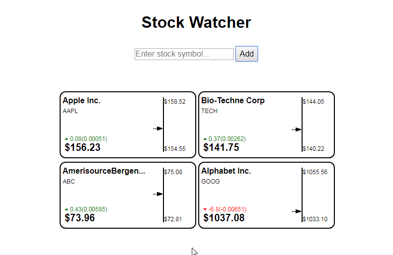
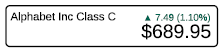
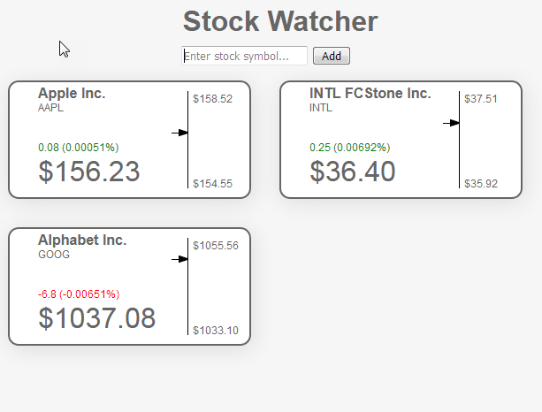
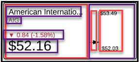
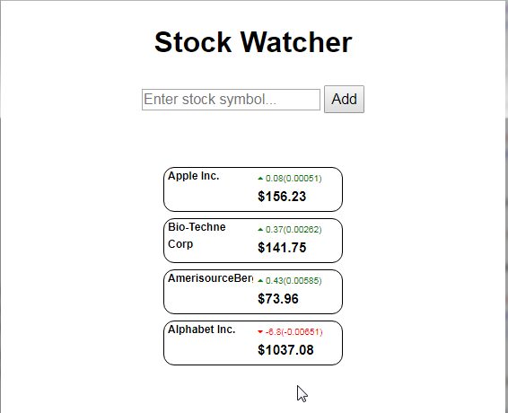

This assignment is to create a responsive website that will reach out to a stock quote company and return current values for any given stock.
The responsive nature of this site is such that when the screen size is above 600px, the following fields will be shown:

Full browser view of Stock Watcher.
When the browser collapses to a maximum of 600px, the image must change. As you can see, the Index field, the arrow and graph disappear, and the price and pricing change move to the righthand side of the container.

Layout for the minimum browser size.
My current design
Div Layout
Within the div container for all of the stock quotes, we have multiple individual cards. The div container houses all of the cards as shown below:

Layout for the full browser.
The divs within the individual cards are shown in the image below. The black outer line represents the card div. Within the card div we've sectioned off a lefthand side div, and a righthand side div. When the browser collapses, we set the righthand side div to width and height of 0, and visibility to hidden, leaving only the information in the lefthand side div visible
Within in lefthand side div, we have 4 additional children. I can then rearrange the children in the lefthand side div, hiding the Index child, then repositioning the change in pricing div, and the price div to the right hand side or the containing div.

Div layout as currently used.
Because the nature of the cards only have two sizes, I chose to use display: inline-block;, with position: relative; for the card, then the divs within the card I chose position: absolute; then used my margin-top: x-pxs; to position all the divs from the top of the card.
With the div's for the arrow, vertical line, high and low prices styled by their own classes, I was easily able to hide these when the screen size fell below approx 600px, and move the price and price change percentage to the right hand side of a reduced size card.
The result is the following:
Output for Larger Browser Configuration
And for the browser layout where the browser is less than 600px:

Output for Minimum Browser Configuration
Challenges
This assignment presented several challenges:
Using API's : finding the API and understanding the fields
Graphical representation (arrow and vertical line) of change in stock values
Graphical representation (up arrow/down arrow) of change in stock values
Reponsive design, altering the output based upon the display size
Because each tile housing stock prices was created dynamically, all of the html was created in javascript
div positioning
Positioning the arrow along the line took some math and one image of a horizontal arrow. I set the vertical line as the border-left of my div. The high and low values were simply a paragraph with static break positioning the high at the top of the div, and the low at the bottom of the div. Then the div immediately to the left was just narrow enough to house the image of the arrow, and the same height as the div with the veritcal bar. Calculating where to place the arrow took a bit of math, as I had to determine the spread between the high and low values, then determine what percentage of that value was my current value. From there, I took the number of pixels from the top of the line to the bottom of the line and multiplied it by the percentage of movement in the stock price. I set the line height at that value.
Lessons learned:
CORS error was misleading: I received a cross browser error whenever I placed the
api call inside a callback or other function. If the api call was in the main portion
of the javascript it responded without error. It turned out this was a huge red-herring,
as I surrounded my input boxes with the form tag. Removing these tags eliminated the
CORS error.
I found a great font package that provides symbols, and treats them like text.
So whatever formatting you do to your text, applies to the symbol as well. It's called
FontAwesome.
This exercise was huge with my understanding of the dev tools and div
positioning - perhaps one of the most challenging aspects of this exercise.
More important than all of the above, was truly examining the layout and changes
before starting to code. Once I understood how the layout was going to change with
the responsive design, I was able to determine how to use my divs.